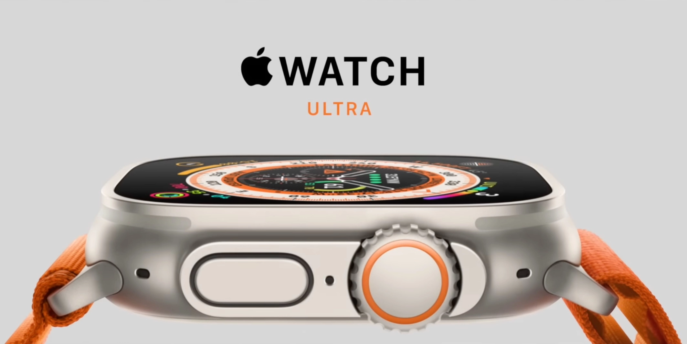

Apple Watch
Best For Best
Apple Watch Ultra
Design Pioneering engineering.
Oct 14, 2022,06:34pm EDT
Meet the most rugged and capable Apple Watch ever.
With a robust titanium case, precision dual-frequency GPS, up to 36 hours of battery life,
1 the freedom of cellular,2 and three specialized bands made for athletes and adventurers of all kinds.
To build the ultimate sports watch, we crafted every element with painstaking attention to detail for unparalleled performance.
Titanium strikes the perfect balance between weight, ruggedness, and corrosion resistance.
The new case design rises up to surround the flat sapphire crystal and protect it from edge impacts.
The Digital Crown is larger and the side button is raised from the case, making them easier to use while you’re wearing gloves.
49mm titanium case
Water resistance 100m*
Tested to MIL-STD 810H3
IP6X dust resistance4
The biggest and brightest Apple Watch display. The Always‑On Retina display is 2000 nits at its peak and twice as bright as any other Apple Watch.
The bigger display provides more room for workout metrics and detail‑packed watch faces.
The Wayfinder face lets you rotate the Digital Crown to activate Night Mode for better viewing in low light situations.
GPS
Ready for Action. The new Action button gives you quick, physical control over a variety of functions. It’s customizable and can do things like control a workout, mark a Compass Waypoint, or begin a dive. Just like you, it’s full of potential.
Everything in its place. An essential and versatile tool that fits on your wrist, Apple Watch Ultra packs incredible capability into a surprisingly small space.
The GPS dilemma. For most people, a traditional GPS solution with just L1 GPS works well most of the time. But it can be tricky when tall buildings, trees, or dense foliage block satellites. The newer L5 GPS enables advanced signal processing, reducing many errors and providing a more consistent signal in environments like dense cities.
Precision dual‑frequency GPS
L1 and L5 GPS for incredible accuracy and precise metrics

Battery
Battery life for days. When you’re on the second day of a backpacking trip,
the final leg of a triathlon, or diving along a coral reef, the last thing you want to think about is running out of battery.
Up to
36hrs of normal use Up to 60hrs on low power settings
With longer battery life than ever, you can take on almost anything and have energy to spare.Hike, run, dive. There’s a band for that.
Making the ultimate sports watch for athletes of all kinds required a unique approach.
That’s why specialized bands for outdoor adventures, endurance training, and water sports are as meticulously crafted as the watch itself.

Two frequencies. One precise solution. Apple Watch Ultra integrates both L1 and L5 GPS into a new antenna design for greater range with incredible power efficiency.
It combines data from these two frequencies to provide amazingly accurate distance, pace, and route calculations.
The most accurate GPS in dense urban environments.
The dual-frequency system combines with Apple Maps to include road, bike, and trail routes that better identify actual locations. Accuracy is boosted by new satellite and signal models.
And a custom, advanced algorithm makes optimal use of available satellite signals.